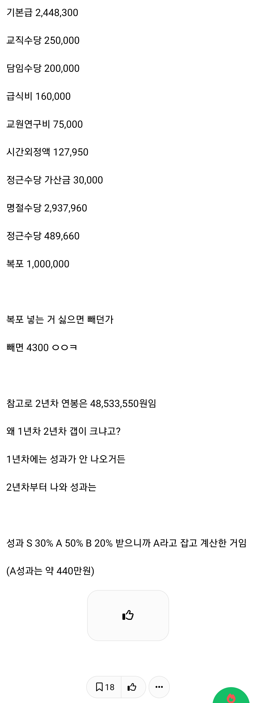
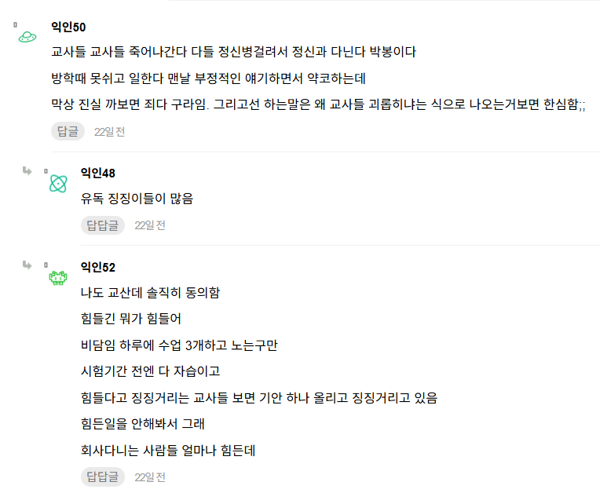

인티에서 교사들 힘들다고 징징거리는거
빡쳐서 올린 것으로 추정 됨
댓글 절반이 부들부들 대고 있다고 함...
https://www.instiz.net/name/67629647


인티에서 교사들 힘들다고 징징거리는거
빡쳐서 올린 것으로 추정 됨
댓글 절반이 부들부들 대고 있다고 함...
https://www.instiz.net/name/67629647
그러니까 더 정확
아 자기 월급 공개가 아니라 교행이라 교사들 월급 명세 깐거구먼 ㄷㄷㄷ
아무개 슴가 사이즈 작다하면 뒤에서 브라 까버릴 친구구먼
어차피 공무원 급여는 다 공개돼있어서 친구가 80점이라 둘러대고 숨기려는 100점 시험지를 애들한테 얘 구라쳤어 하면서 공개한 정도
글킨하지 ㅎㅎ
사이드잡하느냐 안 하느냐에서 꽤 갈릴듯
저기서 민원이고 나발이고 교사가 힘들다고 징징거리는 애들은
제약회사 영업 다니면 1주일 안에 자살한다 ㅇㅇ
ㅇㄱㄹㅇ 근데 나같으면 빌어먹기 위해서 말도 안 통하고 후드려 팰 수도 없는 애새끼들 평생 상대하며 살아야 한다면 쉽진 않을듯?
이건 특수교육쪽이고 일반학교 초등 고학년쯤되면 말 통하는데 안듣는거지
그나마 군대라도 갓다온 남자들은 개념있는데.
극여초직장이라서 완전히 닫힌사회.
오죽하면 경찰들도 제일 답답한게 여교사라고
교통사고건 생활민원이건 무조건 자기말이 맞는데 저사람이 말을 내말을 안듣는다 식
요새 교사들 힘들다고 언플 많이하는데
진짜 교직에 열정 1도없고 애들 아갈닥치게만하려는 교사들 많이 봤다.
우리 회사는 과세표준 잡히는 복포랑 안잡히는 복포 두종류로 주는데, 과표 잡히는 복포라면 연봉에 넣는게 맞지. 원징에 잡히니까.
최악의 배우자직업중 하나
유독 9급이나 교사들 약코가 심한건 사기업은 월급이 전부지만 공직은 그렇지 않기 때문임 사기업은 월급 적게 받는다 하면 니 능력이 부족한거란 소리듣지만 공무원은 불쌍해 보여서 약코하는거
우리식당에 얼마전 교사들 회식옴. 무슨학교 회식은 아니고 어디지역 교사들 모임 이런거같더라. 근데 차가 무슨 5시리즈, 이클, x5, 타이칸, gv80 이런거 타고오던데 내가 학교다닐때 봤던 선생님차(구구형 국산차) 느낌이 아니더라. 교사 월급이 엄청 올랐거나 교사들중 금수저들 모임인가 싶었음ㅋㅋ
보통 서울이 아니라 경기도외곽권 교사들은 월급이 꾸준히 나오니까 그거로 집은 대출하고 차 비싼거 타더라
내가 교생할때 나 담당해주던쌤은 나이가 당시30대 중반이였는데 결혼은 안하셧고 매일 다른 명품백 들고 다니셧음
그정도 여유는 있는거같음
방학 있고 성과 달달하고 정규수업은 4~5시면 끝나고
초등학교 저학년 맡으면 그마저도 1시 전에 수업 다 끝나고 그러는데도 4000넘지 연봉이
뭐 이래저래 뭐 한다고 4~5시쯤 퇴근하는건 아는데
징징대는거 보고 있으면 씨발 소리만 나오긴 하지
공징징 교징징 안뒤지냐?
다죽여줘 닥치게 ㅋㅋㅋㅋㅋ
교사 대우가 안좋니 뭐니 해도 이미 한국은 전세계에서 교사 대우가 탑급으로 좋은 국가임.. 비교할 수 있는 국가 있으면 말해보면 된다.
교사 공무원 욕처먹는거 보니 경제가 안좋긴 한가보다
교사는 1호봉 부터 시작안하잖아
보통9~11호봉부터 시작하지
근데연봉 얘기할때 원래 성과급포함하나?
ㅇㅇ
아 저만큼 받으니까 그 거지같은 교사 생활 버티는구나
초봉으로 공무직이 저정도 안나오지
앵간한 중소기업에서도 안나옴
근데 이런글 올라오면 자꾸 교사랑 ㅈ소랑 비교하는거임?
쿨돈건데머 ㅋㅋ원레 좆방이 몸빵했는데 경쟁한자리로 나락가버려서 이제 교사로 돌아간거지 경찰 공기업 웃지마 담엔 니차례일수도있음ㅋㅋㅋ
그래도 소방은 교사처럼 징징대진 않아
뭐야 돈 잘받는구만 ㅋㅋㅋㅋ 육휴나 휴가쓰는거에 지장없고(방학있으니까) 초봉 4천넘기면 걍 좋은직장인데
좋은 직장은 맞음 돈을 막 확 땡기는 그런직장은 아니지만 3인가족이 먹고살만큼은 어느정도벌고 맞벌이면 연금제외하고 노후까지 준비할 수 있는정도라 생각함
추석이랑 연초같이 돈 많이 빠지는 달에 상여금이나 떡값들어오는것도 좋구
일반학교 선생님들 모임에서 격주로 만나서 얘기 많이 하는데 본인들은 다 좋다좋다 얘기 많이들 함
마이스터고 선생님들은 업무에서 주로 만나는데 항상 우리 애들 좀 잘 부탁한다 굽신굽신하는거 보면 쉽지 않다 생각 듦
교사 부부면 생활수준 좋더라
교사부부는 옛날부터 걸어다니는 중소기업이라 했음
보지교사가 개꿀통이지 하는거도 별로없지 박히다가 임신하면 쉴수있지ㅋㅋㅋ
교사들 정병빼면 1티어 직업인 이유가 있는거아니였나.. 왜 박봉이라고 그러지
약코해야 콩고물이라도 나오고 경쟁자가 줆
꿀통이니까 죄 여자만 몰리지
꿀통인지 아닌지 모르겠으면 현직자 성비를 보면 됨
아니꼬우면 교사가 초등학생 상대로 고소하는 그 집단
4시 되면 교통량 늘어나는게 교사들 퇴근해서 그런가 아님?
우연히 사립고 급여지급내역 본적이 있는데
호봉까지 높아지면 진짜 개꿀통이 따로 없음
사립이라 뿌리내리고 몇십년 계속 일하는 교사가 많다보니 연봉 칠팔천 넘기는 사람도 많았음ㅋㅋ
교사가 꿀직업인 건 알겠는데 남들 꿀 빠는 거에 왜 이렇게 화가 난 거임?
어제는 좆방 깠는데 교사쿨도 같이 돌았나보지
방학유급이라고 뭐라 하는애들 있는데
교사는 연차를 맘대로 못쓴다는건 생각 안해봄?
힘들지 않다고는 하지 않을게
근데 7급 공채 기준으로도 대부분 교사들보다 근무여건이나 처우가 좋지 않음
교사들 눈높이가 어느정도인지는 모르지만 5출들하고 비교해도 대우면에서 엄청 밀리지 않음
초봉 4.4면 괜찮은편아냐?
항상 재난지원금 대상이 아니긴 하더라
교사 아니자나 교행이라자나